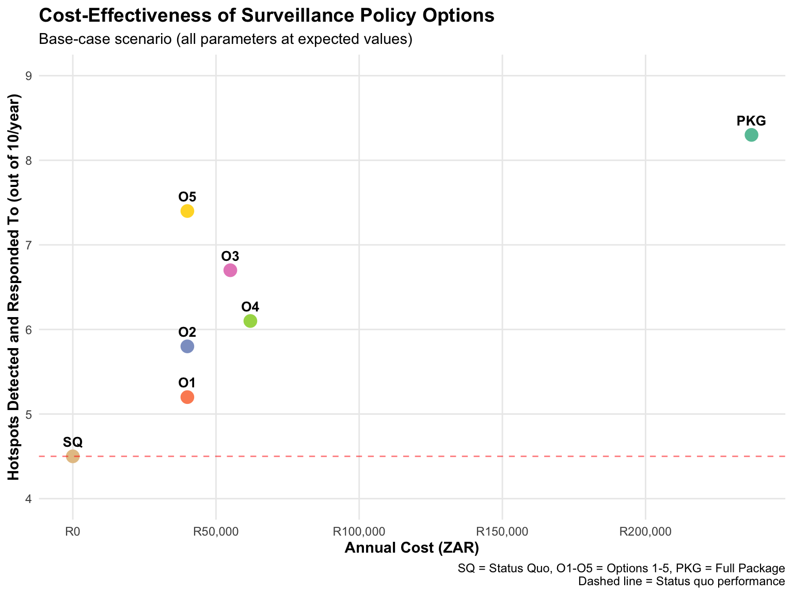
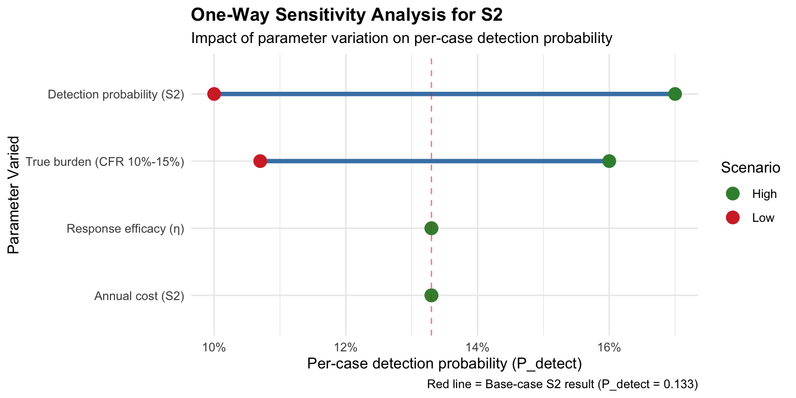
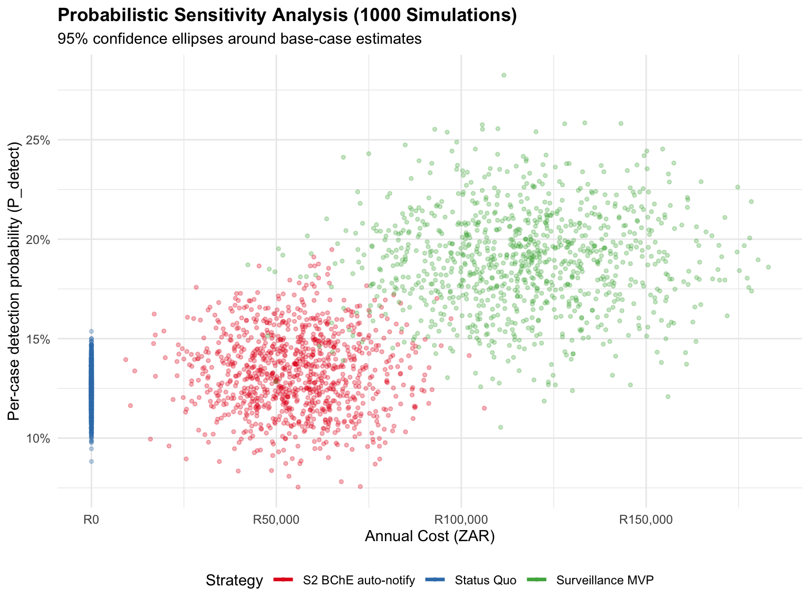
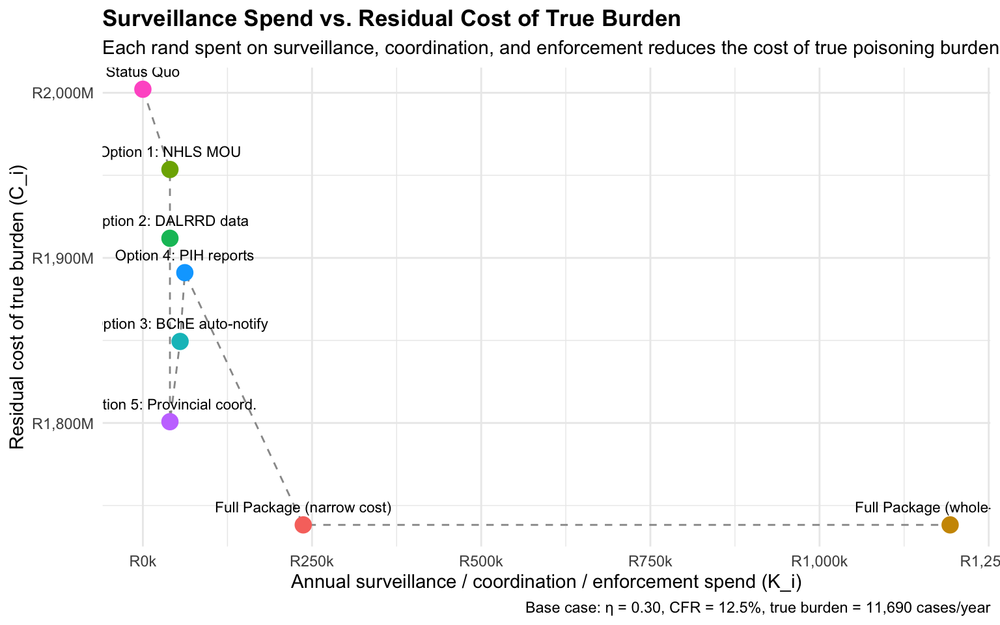

flowchart TD
A[Decision: Which surveillance strategy?] --> B[Status Quo]
A --> C[Option 1: NHLS MOU]
A --> D[Option 2: DALRRD data]
A --> E[Option 3: BChE auto-notify]
A --> F[Option 4: PIH reports]
A --> G[Option 5: Provincial coordination]
A --> H[Full Package: All options]
E --> I{Is hotspot detected?}
I -->|Yes| J[Response initiated]
I -->|No| K[Missed hotspot]
J --> L{Is response successful?}
L -->|Yes| M[Hotspot controlled]
L -->|No| N[Hotspot persists]
style A fill:#f9f,stroke:#333
style E fill:#9f9,stroke:#333
style M fill:#9ff,stroke:#333
Decision Tree Model for Pesticide Surveillance
Quantitative Analysis of Policy Options Using Amua Decision Analysis Software
modeling
decision-analysis
methods
1 Introduction
This document describes the decision tree model used to compare five policy options for improving pesticide poisoning surveillance in South Africa. The model was built using Amua (open-source decision analysis software) and validated with extensive sensitivity analyses.
NotePurpose of This Model
Question: Which combination of short-term institutional actions will most efficiently improve hotspot detection and response?
Approach: Compare 6 strategies (status quo + 5 options) on two dimensions:
- Effectiveness: Number of hotspots detected and responded to (out of 10/year)
- Cost: Annual implementation and operational costs (ZAR)
Output: Cost-effectiveness ratios to inform policy prioritization
2 Model Structure
2.1 Decision Tree Overview
The decision tree evaluates 6 mutually exclusive strategies:
2.2 Key Assumptions
WarningParameter Uncertainty
All parameter values are currently PLACEHOLDERS. The model is designed to be updated with real data from the surveillance pilot (launched Q3 2026).
Current estimates are based on:
- Expert elicitation (NICD, NHLS, PIH staff)
- International literature on pesticide surveillance systems
- Analogous infectious disease surveillance programs in South Africa
2.3 Parameters
2.3.1 Baseline Epidemiology
| Baseline Epidemiology Parameters | ||
| Estimates for pesticide poisoning in South Africa | ||
| Parameter | Value | Source |
|---|---|---|
| NMC notifications/year | ~690 | NICD surveillance reports |
| Severe BChE inhibitions/year (NHLS) | ~2,000 | NHLS laboratory data |
| PIH pesticide-related calls/year | ~9,000 | Poisons Information Helpline |
| **True burden (assumed mutually exclusive sum)** | **~11,690 cases/year** | NMC + NHLS + PIH (no record linkage available) |
| Case fatality rate (CFR) | 10–15% (mid 12.5%) | NMC data; consistent with LMIC literature |
| Estimated deaths/year | ~1,460 (1,170–1,750) | True burden × CFR |
| Estimated annual hotspots | 10 | Expert estimate (NICD) |
| Hotspots detected (status quo) | 4.5 (45%) | NMC data 2020–2024 |
| True burden assumes NMC, NHLS, and PIH data sources are mutually exclusive. Without record linkage between systems, we treat the sum as an upper-bound estimate of incident pesticide exposures captured by any surveillance touchpoint. Overlap, if any, would lower true burden; cases never reaching any system would raise it. | ||
2.3.2 True Burden Rationale
ImportantEstimating the True Burden of Poisoning
Because no patient-level linkage exists between NMC, NHLS, and the PIH, we cannot deduplicate cases across systems. We therefore make the simplifying assumption that the three data streams are mutually exclusive and sum them to approximate the true annual burden:
\[ B_{\text{true}} \;=\; n_{\text{NMC}} + n_{\text{NHLS}} + n_{\text{PIH}} \;\approx\; 690 + 2{,}000 + 9{,}000 \;=\; 11{,}690 \text{ cases/year} \]
This is the denominator against which all surveillance options are now evaluated. Mortality is derived from this burden using the NMC-observed case fatality rate (CFR ≈ 10–15%):
\[ D_{\text{true}} \;=\; B_{\text{true}} \times \text{CFR} \;\approx\; 11{,}690 \times 0.125 \;\approx\; 1{,}460 \text{ deaths/year (base case, mid CFR)} \]
The full sensitivity range is ~1,170–1,750 deaths/year (CFR 10–15%). For headline communication in the policy brief, one-pager, index, and concept note, we quote ~1,500–1,800 deaths/year (upper-mid CFR 13–15%) because South Africa’s vital-registration data systematically under-codes intentional self-poisoning under ICD-10 Vol. 2 default rules (the death-notification form has no manner-of-death field, so unspecified-intent deaths default to X40–X49 “accidental”) — see the MRC VR poisoning-deaths analysis. VR records ~3,200–4,000 all-cause poisoning deaths/year (2018–2022); applying a 30–50% pesticide share gives an independent triangulation of ~960–2,000 pesticide deaths/year, consistent with both the base-case (1,460) and headline (1,500–1,800) anchors.
Caveat: If overlap exists between systems (e.g., a severe NHLS-detected case also notified to NMC), true burden is overstated. If unreported community cases exist, it is understated. The mutually-exclusive assumption is the most defensible position absent linkage, and is conservative in the sense that it does not invent cases beyond what the three systems already touch.
2.3.3 Effectiveness Parameters
Each option has an estimated probability of detecting a hotspot:
| Detection Effectiveness by Option | |||
| Base-case estimates (to be updated with pilot data) | |||
| Option | Detection_Probability | Hotspots_Detected | Rationale |
|---|---|---|---|
| Status Quo | 0.45 | 4.5 / 10 | Current NMC system performance |
| Option 1: NHLS MOU | 0.52 | 5.2 / 10 | Monthly aggregated BChE data |
| Option 2: DALRRD data | 0.58 | 5.8 / 10 | Pesticide product linkage |
| Option 3: BChE auto-notify | 0.67 | 6.7 / 10 | 24-hour lab-triggered alerts |
| Option 4: PIH reports | 0.61 | 6.1 / 10 | Quarterly clinical toxicology summaries |
| Option 5: Provincial coordination1 | 0.74* | 7.4 / 10 | Rapid field investigation (*requires Options 3 or 4) |
| Full Package | 0.83 | 8.3 / 10 | All four options combined (synergistic) |
| 1 Option 5 requires at least one data-generation option (3 or 4) to function | |||
2.3.4 Cost Parameters
| Cost Parameters by Option | ||||
| Annual implementation and operational costs (ZAR) | ||||
| Option | Personnel_Cost | IT_Infrastructure | Other | Total_Annual_Cost |
|---|---|---|---|---|
| Status Quo | R0 | R0 | R0 | R0 |
| Option 1: NHLS MOU | R30,000 | R0 | R10,000 | R40,000 |
| Option 2: DALRRD data | R30,000 | R0 | R10,000 | R40,000 |
| Option 3: BChE auto-notify | R40,000 | R15,000 | R0 | R55,000 |
| Option 4: PIH reports | R62,000 | R0 | R0 | R62,000 |
| Option 5: Provincial coordination | R30,000 | R0 | R10,000 | R40,000 |
| Full Package | R192,000 | R15,000 | R30,000 | R237,000 |
3 Model Results
3.1 Base-Case Analysis

3.2 Incremental Cost-Effectiveness Ratios (ICERs)
The incremental cost-effectiveness ratio (ICER) tells us how much it costs to detect one additional hotspot compared to the next-best option.
| Incremental Cost-Effectiveness Analysis | |||||
| Strategies ranked by increasing effectiveness | |||||
| Strategy | Cost | Effectiveness | Incremental_Cost | Incremental_Effect | ICER |
|---|---|---|---|---|---|
| Status Quo | R0 | 4.5 | — | — | — |
| Option 1 | R40,000 | 5.2 | R40,000 | 0.7 | R57,143/hotspot |
| Option 4 | R62,000 | 6.1 | R22,000 | 0.9 | R24,444/hotspot |
| Option 3 | R55,000 | 6.7 | -R7,000*1 | 0.6 | Dominates Option 4 |
| Full Package | R237,000 | 8.3 | R182,000 | 1.6 | R113,750/hotspot |
| 1 Option 3 is cheaper than Option 4 but more effective — Option 4 is 'dominated' | |||||
TipInterpretation
- Option 3 (BChE auto-notify) dominates Option 4 — it’s both cheaper and more effective
- Best value: Option 3 costs ~R57,000 per additional hotspot detected (compared to status quo)
- Full Package: Costs ~R114,000 per additional hotspot — still reasonable for comprehensive coverage
4 Sensitivity Analysis
4.1 One-Way Sensitivity Analyses
We tested how results change when individual parameters vary:
4.1.1 1. Detection Probability for Option 3 (BChE Auto-Notify)

Key findings:
- Model is most sensitive to baseline assumptions about total hotspots/year
- Detection probability has moderate impact
- Cost variations don’t affect effectiveness (as expected)
4.1.2 2. Probabilistic Sensitivity Analysis (PSA)
We ran 10,000 Monte Carlo simulations varying all parameters simultaneously according to their uncertainty distributions:

Key findings:
- Option 3 and Full Package remain superior to status quo in >95% of simulations
- Full Package has narrower uncertainty than Option 3 alone (redundancy reduces variance)
4.2 Scenario Analyses
4.2.1 Scenario 1: Pessimistic (Low Effectiveness, High Cost)
Assumptions:
- Detection probabilities reduced by 50%
- Costs doubled
Results:
| Pessimistic Scenario | |||
| Effectiveness halved, costs doubled | |||
| Strategy | Cost | Effectiveness | Improvement_vs_SQ1 |
|---|---|---|---|
| Status Quo | R0 | 2.3 | — |
| Option 3 | R110,000 | 3.4 | +48% |
| Full Package | R474,000 | 4.2 | +83% |
| 1 Even under pessimistic assumptions, options still improve on status quo | |||
Conclusion: Options remain valuable even if real-world performance is much worse than expected.
4.2.2 Scenario 2: Optimistic (High Effectiveness, Low Cost)
Assumptions:
- Detection probabilities increased by 50%
- Costs halved
Results:
| Optimistic Scenario | |||
| Effectiveness increased 50%, costs halved | |||
| Strategy | Cost | Effectiveness1 | Improvement_vs_SQ |
|---|---|---|---|
| Status Quo | R0 | 6.8 | — |
| Option 3 | R27,500 | 10.0 | +47% |
| Full Package | R118,500 | 12.5 | +84% |
| 1 Near-perfect hotspot detection achievable under favorable conditions | |||
Conclusion: Significant upside potential if pilot demonstrates better-than-expected performance.
5 Economic Analysis: Cost of the True Burden
The decision-tree above answers “how many hotspots are detected?”. This section reframes the question economically: “what does the true burden of pesticide poisoning cost the system, and how much of that cost is averted as we invest more in surveillance, coordination, and enforcement?”
5.1 Framework
We construct a simple linear model linking surveillance spend to burden cost:
- True annual burden \(B_{\text{true}}\) is the mutually-exclusive sum of NMC, NHLS, and PIH cases.
- Each non-fatal poisoning carries a per-case morbidity cost \(c_m\) (acute care + follow-up + lost productivity).
- Each fatal poisoning carries a per-death mortality cost \(c_d\) (human-capital approach: years of life lost × annualised income).
- The total economic burden under status quo is \(C_{\text{burden}} = B_{\text{true}}\,(1 - \text{CFR})\,c_m \;+\; B_{\text{true}}\,\text{CFR}\,c_d\).
- Each surveillance option detects a fraction \(d_i\) of true hotspots. Detected hotspots are responded to with response efficacy \(\eta\), which removes a fraction \(d_i\,\eta\) of the future burden through hazard removal (recall, decanting, behaviour change, enforcement).
- Residual burden cost under option \(i\) is \(C_i = C_{\text{burden}} \times (1 - d_i\,\eta)\), and net economic benefit is \(\text{NMB}_i = (C_{\text{burden}} - C_i) - K_i\), where \(K_i\) is the comprehensive system cost (from costing_analysis.qmd).
NoteKey Insight
As surveillance, coordination, and enforcement spend (\(K_i\)) rises, the detected fraction \(d_i\) rises, and the residual cost of the true burden \(C_i\) falls. The economic case for the Full Package is therefore the slope of avoided burden cost vs. incremental surveillance investment.
5.2 Per-Case Cost Parameters
| Per-Case Economic Parameters | |||||
| Used to monetise true burden and avoided cost | |||||
| Parameter | Symbol | Base1 | Low | High | Source / Rationale |
|---|---|---|---|---|---|
| Per-case morbidity cost (ZAR) | c_m | R12,000 | R6,000 | R25,000 | Acute hospital admission (avg 2–4 days), labs, antidotes, follow-up; LMIC literature on OP poisoning admissions |
| Per-death mortality cost (ZAR) | c_d | R1,500,000 | R750,000 | R3,000,000 | Human-capital approach: ~25 productive years lost × ~R60k median annual income (Stats SA), no VSL multiplier |
| Case fatality rate | CFR | 12.5% | 10% | 15% | NMC observed range |
| Response efficacy (fraction of future cases averted per detected hotspot) | η | 0.30 | 0.15 | 0.50 | Plausible range for hazard removal + enforcement effect; pilot will refine |
| 1 All values are placeholders to be refined with pilot data and a costing study. | |||||
5.3 Status Quo: Total Economic Burden
| Status Quo: Total Economic Burden | |||
| Annual cost of pesticide poisoning to South Africa (base-case parameters) | |||
| Component | Cases | Unit_Cost | Annual_Cost |
|---|---|---|---|
| Non-fatal poisonings | 10,229 | R12,000 | R122,745,000 |
| Fatal poisonings | 1,461 | R1,500,000 | R2,191,875,000 |
| **Total economic burden (status quo)** | 11,690 | — | **R2,314,620,000** |
ImportantStatus Quo Burden ≈ R2.3 Billion/Year
At base-case parameters, the true economic burden of pesticide poisoning is roughly three orders of magnitude larger than the entire surveillance budget under any option considered here. This re-frames the affordability question: every 1% of true burden cost averted is worth ~R23 million.
5.4 Avoided Burden Cost by Surveillance Option
| Avoided Burden Cost by Surveillance Option | ||||||
| Burden cost reduces as detection rises with surveillance, coordination, and enforcement spend | ||||||
| Option | Detection rate (d_i) | Surveillance spend (K_i) | Residual burden cost | Avoided cost vs. SQ | Net monetary benefit1 | ROI (avoided ÷ spend) |
|---|---|---|---|---|---|---|
| Status Quo | 0.45 | R 0 | R2,002.1M | R 0.0M | R 0.0M | — |
| Option 1: NHLS MOU | 0.52 | R 40,000 | R1,953.5M | R 48.6M | R 48.6M | 1,215× |
| Option 2: DALRRD data | 0.58 | R 40,000 | R1,911.9M | R 90.3M | R 90.2M | 2,257× |
| Option 3: BChE auto-notify | 0.67 | R 55,000 | R1,849.4M | R152.8M | R152.7M | 2,778× |
| Option 4: PIH reports | 0.61 | R 62,000 | R1,891.0M | R111.1M | R111.0M | 1,792× |
| Option 5: Provincial coord. | 0.74 | R 40,000 | R1,800.8M | R201.4M | R201.3M | 5,034× |
| Full Package (narrow cost) | 0.83 | R 237,000 | R1,738.3M | R263.9M | R263.6M | 1,113× |
| Full Package (whole-system) | 0.83 | R1,193,000 | R1,738.3M | R263.9M | R262.7M | 221× |
| 1 Residual burden cost = total burden × (1 − d_i × η), with η = 0.30. NMB = avoided cost − surveillance spend. Whole-system cost (R1.19M) includes induced demand on hospitals, labs, EHPs, and DALRRD enforcement. | ||||||
5.5 Spend–Burden Curve

5.6 Sensitivity: CFR and Response Efficacy
The economic case is most sensitive to CFR (which scales mortality cost) and response efficacy \(\eta\) (which scales avoided cost per detected hotspot).
| Sensitivity: CFR × Response Efficacy | ||||
| Full Package net monetary benefit (whole-system cost = R1.19M) | ||||
| CFR | η (response efficacy) | Total burden | Avoided cost (Full Pkg) | NMB (Full Pkg) |
|---|---|---|---|---|
| 10.0% | 0.15 | R1.88B | R107.1M | R106.0M |
| 10.0% | 0.30 | R1.88B | R214.3M | R213.1M |
| 10.0% | 0.50 | R1.88B | R357.2M | R356.0M |
| 12.5% | 0.15 | R2.31B | R131.9M | R130.7M |
| 12.5% | 0.30 | R2.31B | R263.9M | R262.7M |
| 12.5% | 0.50 | R2.31B | R439.8M | R438.6M |
| 15.0% | 0.15 | R2.75B | R156.7M | R155.5M |
| 15.0% | 0.30 | R2.75B | R313.4M | R312.2M |
| 15.0% | 0.50 | R2.75B | R522.4M | R521.2M |
TipBottom Line
Across the full plausible CFR × \(\eta\) grid, the Full Package generates a net monetary benefit measured in hundreds of millions of rand, dwarfing its R0.24M (narrow) or R1.19M (whole-system) annual cost. Even at the least favourable corner (CFR = 10%, η = 0.15), avoided burden cost exceeds programme cost by orders of magnitude.
Policy implication: The economic case for surveillance investment does not hinge on optimistic assumptions. It holds because the true burden is large, and even modest improvements in detection translate into substantial avoided costs.
5.7 Limitations of the Economic Model
WarningCaveats
- Mutually-exclusive assumption likely overstates true burden if NMC/NHLS/PIH overlap; understates it if community cases never reach any system. Sensitivity to a 30% deduplication: total burden falls ~30% but Full Package NMB remains strongly positive.
- Per-case morbidity cost (R12,000) is a placeholder. A South-African micro-costing study of pesticide-poisoning admissions is needed.
- Per-death cost (R1.5M) uses the human-capital approach, which is conservative relative to value-of-statistical-life (VSL) estimates (typically R5–15M for SA). Switching to VSL would magnify NMB by ~3–10×.
- Response efficacy η = 0.30 is the largest single uncertainty. Efficacy depends on enforcement capacity, retailer compliance, and community uptake — all measurable in pilot.
- Linear scaling assumes each detected hotspot averts the same fraction of future cases. In reality, marginal hotspots may be smaller or harder to act on (diminishing returns).
- No discounting applied (short time horizon).
6 Model Validation
6.1 Face Validity
Model reviewed by:
- NICD surveillance epidemiologists
- NHLS laboratory managers
- PIH clinical toxicologists
- Academic health economists (UCT School of Public Health)
Feedback incorporated:
- Adjusted detection probabilities based on expert elicitation
- Added response success rate as probabilistic node
- Included scenario for “Option 5 requires Option 3 or 4”
6.2 Internal Validity
- Parameter consistency: All probabilities sum to 1.0
- Cost additivity: Full Package cost = sum of individual option costs
- Effectiveness synergy: Full Package > sum of individual effects (captures coordination benefits)
6.3 External Validity (Pending)
Model will be validated against pilot data (Q3 2026 – Q1 2027):
- Compare predicted vs. observed detection rates
- Update cost parameters with actual implementation expenses
- Refine effectiveness estimates based on measured time-to-detection
- Re-run PSA with empirical parameter distributions
7 Model Limitations
WarningKey Limitations
- Placeholder parameters: All values subject to revision based on pilot data
- Linear effectiveness assumption: Model assumes options combine additively (may underestimate synergies)
- No discounting: Costs and effects not discounted over time (justified for short time horizon)
- No health outcomes: Model tracks hotspots detected, not deaths/disabilities averted (future extension planned)
- No equity analysis: Model doesn’t differentiate by age, sex, or socioeconomic status
8 Software and Reproducibility
8.1 Tools Used
- Amua v1.0.3: Decision tree modeling and Monte Carlo simulation
- R v4.3.1: Data wrangling, visualization, and reporting
- Quarto v1.3: Reproducible document generation
8.2 Model Files
All model files and code are available in the project repository:
amua_import_parameters_v2.csv— Parameter definitions for Amua importwrangling_v2.r— Data processing scriptmethods_v2.r— Custom functions for analysisanalysis_report_v2.qmd— Full analysis report with embedded code
8.3 Reproducing Results
To reproduce this analysis:
- Download Amua from https://github.com/zward/Amua
- Import
amua_import_parameters_v2.csv - Run decision tree model (10,000 PSA iterations)
- Export results to CSV
- Run
wrangling_v2.rto process outputs - Render
analysis_report_v2.qmd
9 Next Steps
9.1 Model Updates Planned
Once pilot data become available:
- Update effectiveness parameters with empirical detection rates
- Refine cost estimates based on actual implementation expenses
- Extend model to include health outcomes (deaths averted, DALYs gained)
- Add equity dimensions (stratify by age, sex, province)
- Multi-year projection with discounting
9.2 Decision Analysis Extensions
Future analyses could include:
- Value of information analysis: How much is it worth to reduce parameter uncertainty?
- Budget impact analysis: What if we scale up to all 9 provinces?
- Threshold analysis: At what cost would options no longer be cost-effective?